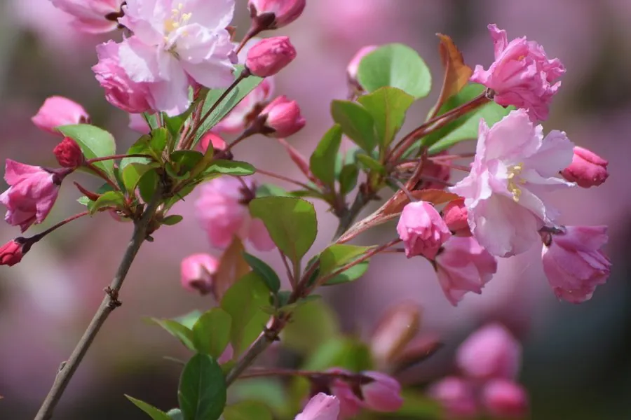

灌木与花木 · 植物界
垂丝海棠 Malus halliana

中国特有的春季观花小乔木，花梗细长下垂、花朵粉红娇艳，是海棠类中最富诗意的品种，常植于庭院。
- 分类
- 门被子植物门纲木兰纲目蔷薇目科蔷薇科属苹果属
- 栖息环境
- 海拔 1500 米以下的山坡、庭院与公园，喜光耐寒
- 地理分布
- 中国江苏、浙江、安徽、四川、云南等地，长江流域广泛栽培
- 保护级别
- 暂无评估；中国未列入国家重点保护野生植物名录
物种志
垂丝海棠为落叶小乔木，高可达 5 m，树冠开展；叶片卵形至椭圆形，边缘具细锯齿。花期 3–4 月，伞房花序生于短枝顶，花 4–7 朵，花梗细长下垂，故得名“垂丝海棠”；花瓣 5 枚、粉红色，花径 3–4 cm，花丝下垂；果实为梨果，倒卵形，成熟时紫红色，果肉可食但味酸。
垂丝海棠原产中国江苏、浙江、安徽、四川、云南等地，中国长江流域及以北地区广泛栽培，喜光、耐寒，适宜深厚肥沃、排水良好的土壤。春季花梗细长、花朵下垂，如丝如锦，是庭院、公园与古典园林中常见的观赏树种；果实可食或加工果脯，也可入药。垂丝海棠与西府海棠、贴梗海棠同为传统海棠名品，其中垂丝海棠以花梗细长下垂、花色娇艳著称，自古有“海棠春睡”的典故。
形态与习性
- 株高可达 5 m，树冠开展
- 花期3–4 月，花梗细长下垂
- 果期9–10 月，梨果紫红色
- 光照喜光，不耐长期荫蔽
- 水分喜湿润，怕积水
- 土壤深厚肥沃、排水良好的壤土
- 主要用途庭院与公园观赏、果实食用与入药、盆景
趣味知识
- 垂丝海棠的花梗细长下垂，粉色花朵如丝线垂挂，因此得名。
- 垂丝海棠与西府海棠、贴梗海棠同为传统海棠名品，各具风姿。
- 垂丝海棠的果实倒卵形，成熟时紫红色，可食也可入药。
- 垂丝海棠春季开花时花梗低垂、花朵含羞，常被比作美人春睡。